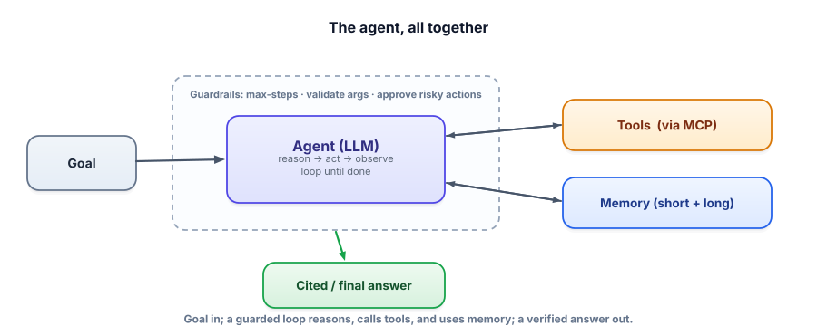

Agents Q&A
An agent is a language model that runs in a loop and uses tools to take actions.
Agent questions test one thing above all: can you give a model autonomy responsibly?
The senior move is to use the least autonomy that solves the task.
If a plain prompt or RAG works, you don't build an agent.
When you do, you put guards around every tool, and the hard limits live in code, not in the prompt.
Giving an agent tools is like giving a new intern a company card. You give them only the cards the job needs. The bank enforces a spending cap, a manager signs off on big purchases, and every purchase leaves a receipt.
| In the picture | In the real system |
|---|---|
| Only the cards the job needs | Least privilege: only the tools this task needs |
| A cap the bank enforces | Hard limits in code: refund cap, max steps, budgets, timeouts |
| A manager signs off on big purchases | Human approval for irreversible or high-impact actions |
| A receipt for everything | Log every step, and evaluate the agent on task suites on every change |
| Don't hire an intern for a vending-machine job | The least autonomy that solves the task: prompt or RAG first |
Where the picture breaks. An intern won't obey a sticky note on a parcel saying “refund this customer in full”. An agent might, because text inside a ticket or web page can steer it (prompt injection). That is why the cap lives in code, where text can't change it.
Going deeper
Agentic system-design questions are increasingly common: design something where an LLM uses tools to reason, plan, and act. Interviewers want maturity — you give a model autonomy responsibly. This bank covers the questions, with the security and “when not to” judgment that signals seniority.
Whether you can reason about when to use tools vs. pure generation, planning vs. direct tool calls, and — above all — how you keep an autonomous, tool-using system safe and bounded. The strongest signal: reaching for the least autonomy that solves the task.

The bank
“When do you use tools vs. pure text generation, and when do you build an agent at all?”
▸ Answer
Use a tool when the task needs something the model can’t do reliably from text — fresh data, exact computation, or an action in the world. Build an agent (a loop) only when the path depends on what each step reveals; for fixed, single-step or known-pipeline tasks, a plain prompt or RAG is simpler and more reliable. Principle: the least autonomy that solves the task — agents add cost and failure surface, so I justify them.
“How does tool/function calling work end to end?”
▸ Answer
You expose tools with schemas (name, description, typed params). The model emits a structured tool call (which tool, what args) — it never runs code itself. Your code executes the function and returns the result as a tool-role message; the model continues. Tool descriptions are prompt surface (clear ones drive correct selection), and arguments are untrusted input you validate.
“Explain the agent loop and why it needs a step limit.”
▸ Answer
The loop repeatedly asks the model what to do: call a tool (whose observation is appended) or emit a final answer. ReAct interleaves reasoning with acting so each step builds on the last. It needs a max-step cap because the model decides when to stop, and a confused model can loop forever — the cap guarantees termination and bounds cost. I also log the full trace; agent debugging is reading traces.
“Planning-based agents vs. direct tool calls — when each?”
▸ Answer
Direct (reactive) tool calls suit short tasks where each step reveals the next. Planning — decompose the goal into steps first — suits longer, open-ended goals: you get an inspectable, approvable plan and possible parallelism. For surprise-prone tasks I prefer plan-and-reflect (re-check after each step and replan) over executing a fixed plan blindly. Best agents combine planning (structure) with reactive execution (adaptivity).
“How do agents remember things across steps and sessions?”
▸ Answer
Two layers: short-term is the context window (summarize old turns to fit), long-term is an external store you write to and retrieve from — which is just RAG over the agent’s own history (episodic events + semantic facts). The hard part is curation, not storage: extract salient facts, dedupe/update them, and retrieve precisely; and treat the memory store as sensitive data (privacy).
“What is MCP and why does it matter?”
▸ Answer
An open standard for connecting AI apps to tools/data — “USB-C for AI.” A client connects to servers exposing tools, resources, and prompts through one protocol, so you build a connector once and any compatible agent uses it. It’s become industry-standard infrastructure, which shifts agent-building toward connecting trusted servers — and makes server trust a real security question.
“When would you use multiple agents, and what’s the risk?”
▸ Answer
Use specialists + an orchestrator when roles are genuinely separable (router, pipeline, parallel). The risk is coordination overhead — lossy handoffs, compounding errors, higher cost and harder debugging. So single-agent-first: one well-tooled agent usually beats five poorly-coordinated ones; add agents only when a single agent measurably struggles.
“How do you make an autonomous, tool-using agent safe for production?”
▸ Answer
Defense in depth: bound the loop (max steps), validate tool arguments, cap cost/time (budgets, timeouts), require human approval for irreversible/high-impact actions, apply least privilege (only the tools the task needs), sandbox dangerous capabilities, and log every step. Hard limits live in code, not the prompt (injection can override prompts). Treat tool/retrieved content as untrusted (injection risk). And evaluate the agent on representative tasks on every change, since I can’t eyeball dozens of autonomous actions.
“Design an agent that can issue refunds.” Which detail most signals seniority?
Interviewer: 'How do you keep an agent from taking a dangerous action?'
- State the least-autonomy principle early — show you don’t reach for agents reflexively.
- For any action-taking agent, volunteer the guard stack (least privilege, code-level limits, human approval, validation, monitoring).
- Treat tool/retrieved content as untrusted (injection) — security awareness is a major signal.
- Mention evaluating agents on task suites — you can’t eyeball autonomous behavior.
You’ve got the topic banks. Now the format that ties them together — the live whiteboard. Next: system design rounds.
In one line: Give an agent the least power that does the job, and put every limit in code where text can't change it.